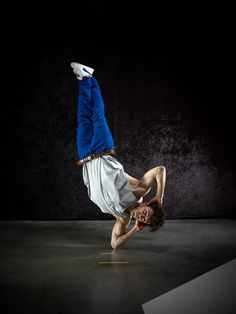

Freeze
Freezes is een poze die je aanneemt na een combinaties van moves. Dit geeft aan dat dat jou stukje dans stopt of dat je erna nog een hebt. Hier heb je talloze freezes die je achter elkaar kan combineren zodat het er mooi uitziet. Bij freezes heb je een basis move/freeze, Turtle. Bij deze freeze heb je beide ellebogen in je buik met je handen op de grond, zodat je op je onderarmen zweeft. Dit is de aller eerste freeze omdat je vanuit dat punt combinaties kan maken, bijvoorbeeld : Windmill.
